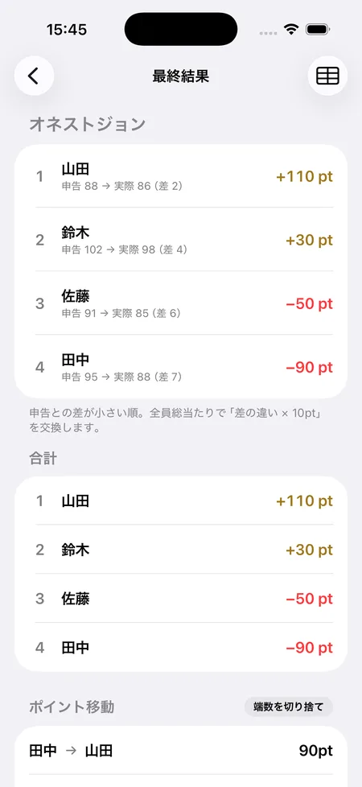

ゴルフ「オネストジョン」のルールと計算方法
SQORE編集部 ｜ 2026年8月14日更新
オネストジョンは、スタート前に自分の合計スコアを申告し、実際のスコアが申告に近かった人ほど勝ちになるゲームです。打数の少なさではなく「申告との差の小ささ」を競うので、上級者も初心者も同じ土俵で楽しめます。正直に申告するほど有利になることから「オネスト（正直）ジョン」と呼ばれます。
基本ルール
- スタート前に、各自が今日の18ホール合計スコアを申告します（例: 90）。
- ラウンドが終わったら、各自の「実際のスコアと申告スコアの差」を出します。プラスもマイナスも関係なく、差の大きさ（絶対値）で見ます。
- 差が小さい人ほど上位。参加者全員で総当たりに比べ、差が小さい人が差の大きい人からポイントを受け取ります。
- やり取りは「差の違い×1打あたりのポイント」。全員の受け取りと支払いの合計は必ずゼロになります。
計算例（差1打＝10ポイント・3人）
Aさん: 申告90 → 実際90（差0）
Bさん: 申告85 → 実際88（差3）
Cさん: 申告100 → 実際93（差7）
→ 総当たりで差を比べると、A＝+100ポイント / B＝+10ポイント / C＝−110ポイント。
（申告ぴったりのAが一番勝ち、差が7と大きいCが負け越し。全員の合計はゼロ）
なぜ「正直」が有利なのか
評価するのは申告との差だけなので、わざと多めに申告して上振れを狙う戦略は効きません。90と申告して85で回れば差は5、95でも差は5で同じ扱いです。自分の実力を正しく見積もれる人が勝つため、実力そのものより自己分析の勝負になります。調子の波が大きい人には不利、安定している人には有利なゲームです。
オネストジョンの魅力
- 実力差があっても対等 — 打数ではなく申告との差を競うので、ハンデを設定しなくても上級者と初心者が同じ条件で勝負できます。
- 最後まで自分のペースを守る — 申告に近づけるために「大叩きしない」「無理に攻めない」といった、スコアメイクそのものの意識が高まります。
- 準備が簡単 — スタート前に数字を1つ決めるだけ。あとは普段どおり回るだけで成立します。
アプリなら申告も精算も自動
申告と実際の差を、全員総当たりで一発精算
iPhoneアプリのSQOREなら、スタート前に各自の申告スコアを入れておくだけ。ラウンド後は打数から差を出して、総当たりの精算まで自動でまとまります。
画面は申告と実際の差が小さい順。差の違い×1打ポイントを全員で交換するので、合計は必ずゼロになります。参加しない人を外したり、1打あたりのポイントを変えたりも設定画面でワンタップです。

よくある質問
申告より良いスコアで回ったら？
申告より良くても悪くても「申告との差」だけで判定します。90と申告して85なら差は5、95でも差は5で同じ扱いです。
途中で申告スコアを変えられますか？
いいえ。申告はスタート前に決めるのがルールです。ラウンドが始まってから成り行きで申告を変えられてしまうとゲームが成立しないため、申告はスタート前に固定します。
他の握りゲームと同時にできますか？
できます。ラスベガスやオリンピックなど打数を使う他のゲームと同時に開催しても、オネストジョンは申告との差だけで独立して精算されます。
申告も差の計算もアプリにおまかせ
SQOREはオネストジョン・ラスベガス・オリンピックなど定番ゲームのポイントを自動計算する無料アプリです。
ゲームをしない日はスコアアプリとしてそのまま使えます。いま打つホールの自分の平均スコアやOB率も出ます。
Download on theApp Store